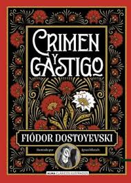

Crimen y Castigo
Obra Maestra de la Psicología Literaria
Fiódor Dostoyevski
Editorial Gredos - ISBN: 978-8424936983
Sinopsis de Crimen y Castigo
Rodión Raskólnikov, un estudiante empobrecido en San Petersburgo, comete un asesinato creyendo que está por encima de las leyes morales comunes. A medida que la culpa lo consume, debe enfrentar un tormento psicológico que lo lleva al borde de la locura antes de encontrar la redención.
Recomendado por Haruki Murakami como una exploración definitiva de la conciencia humana. Dostoyevski penetra en las profundidades de la mente criminal, examinando la moralidad, la justicia y la posibilidad de redención. Una novela que cambia la forma de ver la condición humana.
🎬 Análisis y Reseña del Libro
El dilema moral de Raskólnikov y su camino a la redención